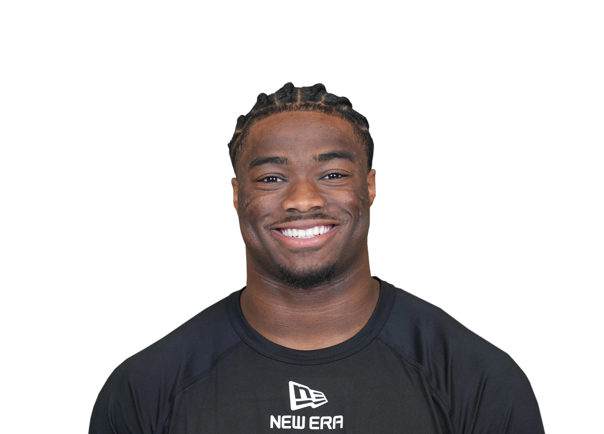

Position: QB
6.14
Round 2 ‧ Pick 18
Milroe is an explosive athlete who is very capable outside the pocket, but he lacks accuracy, touch and decision-making when he’s inside the pocket. A lack of anticipation and timing leads to interceptions and contested throws to intermediate areas of the field. He has an NFL arm, but he might need to fine-tune his footwork and delivery to improve accuracy on all three levels. He can get through his reads when he’s confident and feels protected but becomes predictable and easier for defenses to manipulate when he’s rattled. He’s built like a Will linebacker, runs like a receiver and is a threat to hit the home run on called runs and scrambles. Milroe was a much better deep-ball passer in 2023, but his 2024 regression makes it harder to project success from the pocket at a high enough rate to become a capable NFL starter. A strong arm and elite speed will have teams intrigued, but if he doesn’t make it as a starter, it’s incumbent upon his team to find a way to get the ball in his hands with packaged plays.
[Sources Tell Us Placeholder]